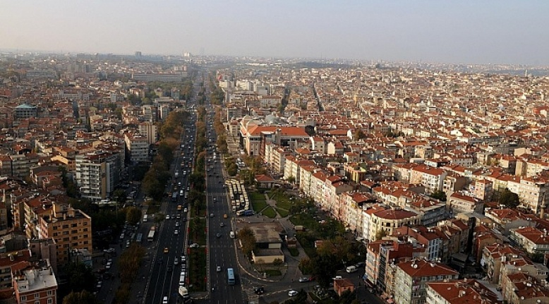
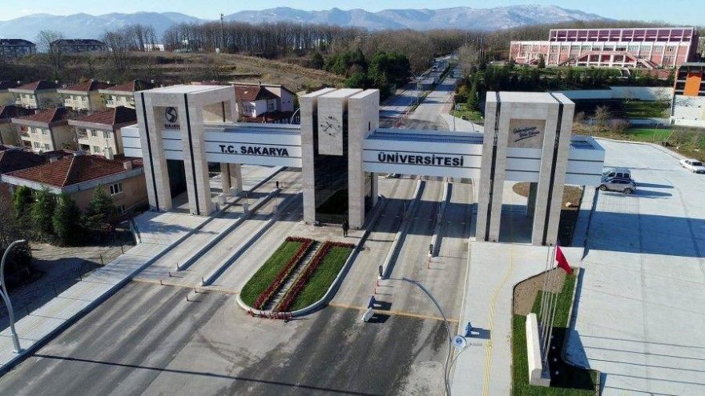

Adıyaman
Nemrut Dağı

İstanbul
Fatih

Sakarya
Sakarya Üniversitesi
6 Ağustos 2002'de Fatihte doğdum. Ve 18 yıl boyunca da bu Fatih'te ikamet ettim. Ve bu süre zarfında Fatih'i her geçen gün daha çok sevdim bunun temel sebeplarıinden biri Fatihin kendine has tarihi dokusu , gerçekten her köşesinde ayrı bir tarihi kalıntıya rastlamak mümkün .Örnek olarak Ayasofya Cami , Bizans Surları ,Süleymaniye Cami gibi çeşitli yüzyıllarda yapılan yapılar verilebilir . Memleketim olan Adıyaman hakkında malesefki Fatih kadar bilgili değilim ama yinede Adıyamanın da günümüze Fatih gibi değerli tarihi kalıntılar bıraktığını biliyorum. Bunların arasında en önnemlisi tabiki de Nemrut Dağındağı'dır.Nemrut Dağı'na Mirasımız kısmında daha detaylı bilgiler bulunmakta. Ortaokul yıllarında okulum vasıtasıyla lisans alarak satranç turnuvalarına katıldım. Bu turnuvalardan pek bir başarı elde edemesemde en azından keyifli zamanlar geçirdim. Ortaokul eğitimim ardından Sağmalcılar Anadolu Lisesinde lise hayatıma başladım 3,5 yıl süren lise hayatımın son yarı döneminde Açık Lise'ye geçme kararı aldım. Ardından girmiş olduğum üniversite sonucu ile Sakarya Üniversitesi Blgisayar Mühendisliği bölümünü kazandım. Bu bölümü seçmemdeki temel neden teknolojiye ve bilhassa bilgisayarlara olan ilgimden kaynaklanıyor. Ve şu an halen Sakarya Üniversitesinde Eğitimime devam etmekteyim. İyi furtbol oynamasamda Futbol liglerini takip etmek ilgi alanlarım arasında yer alıyor. Ama şunu da belirtmeliyim ki Fenerbahçe sayesinde bu ilgi alanımdan her geçen gün uzaklaşmaktayım.